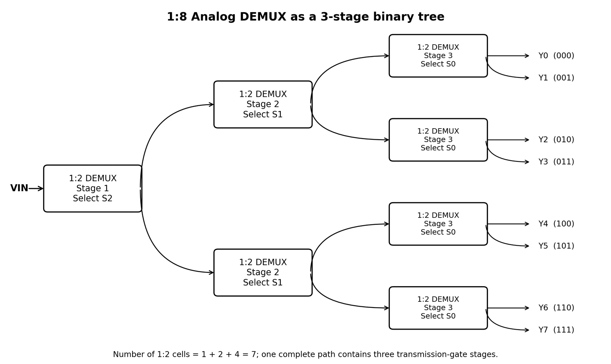
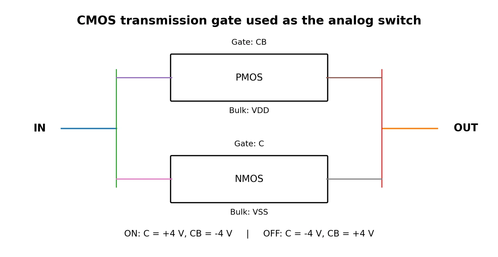
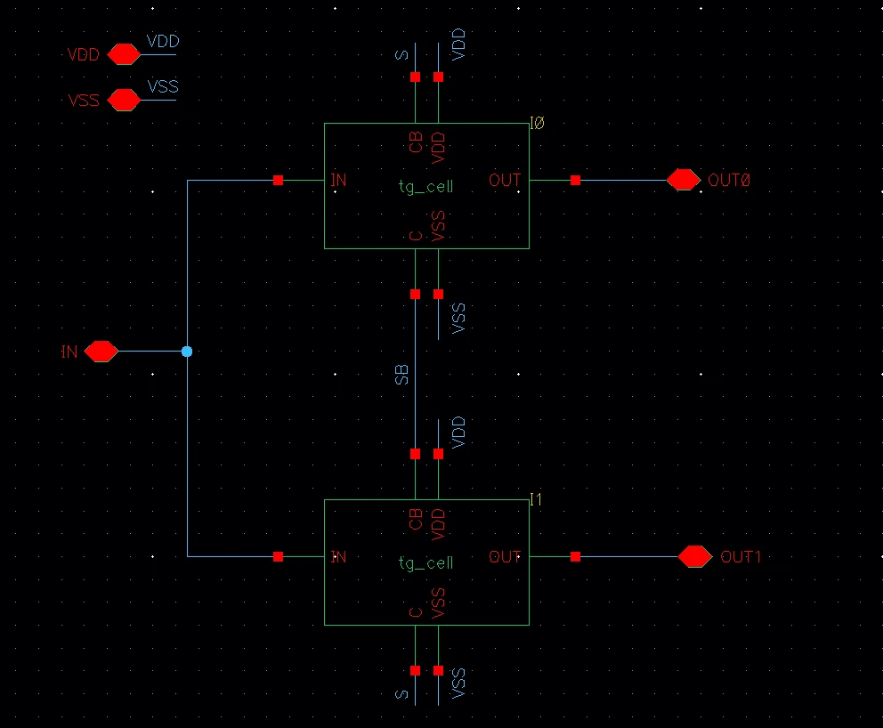
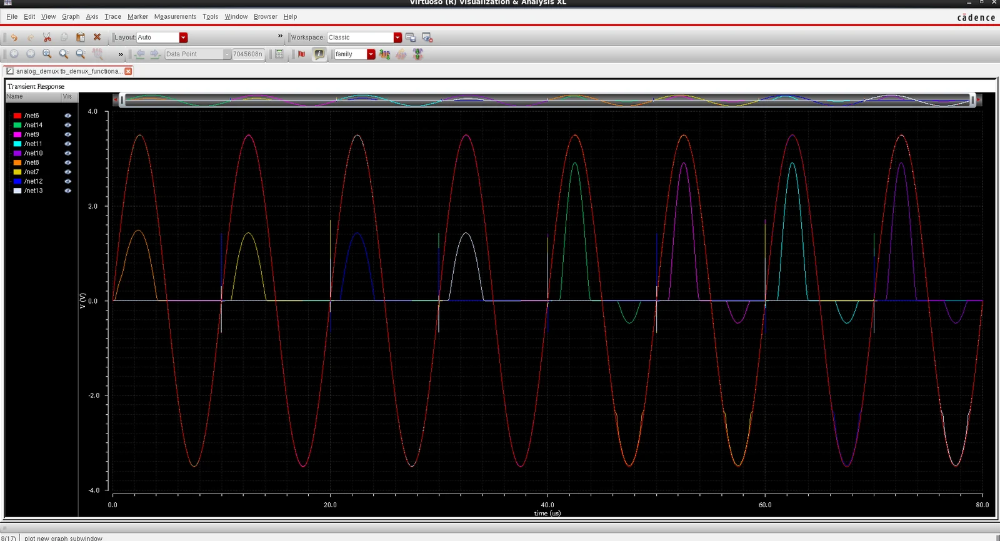
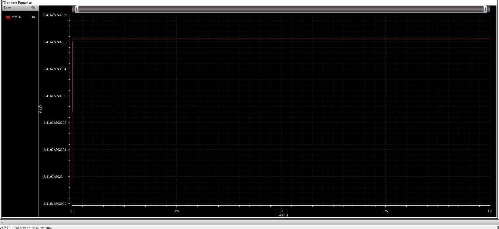
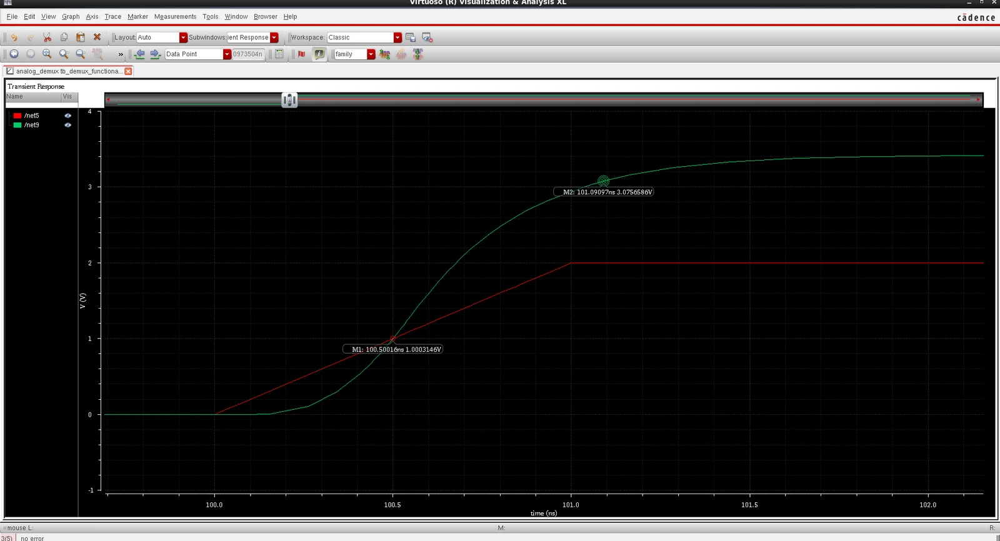
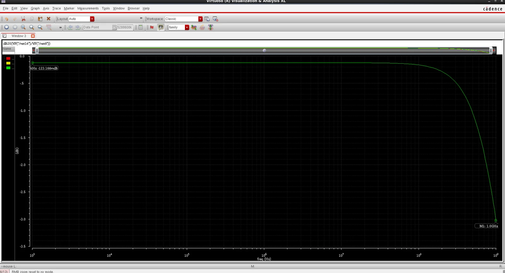
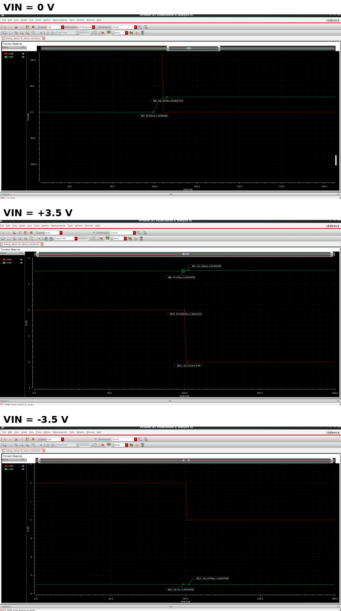
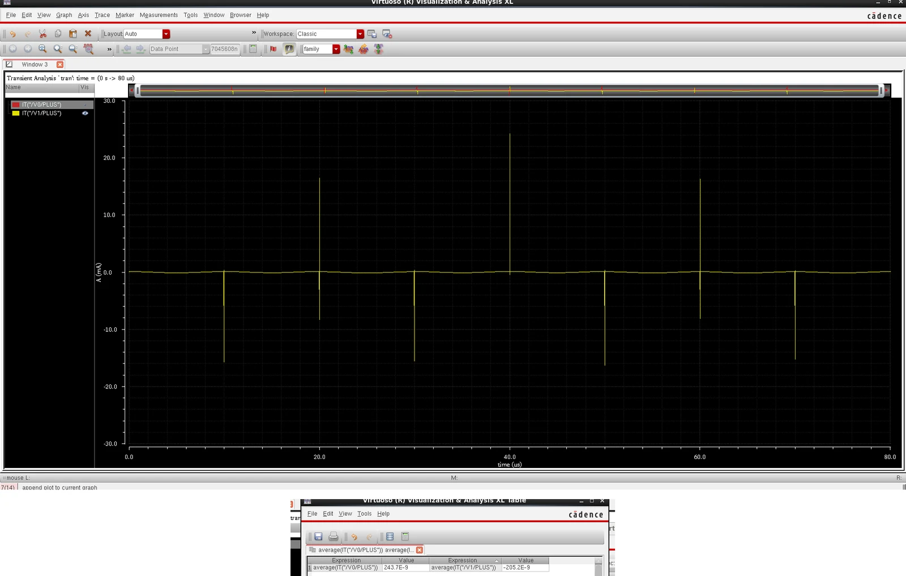
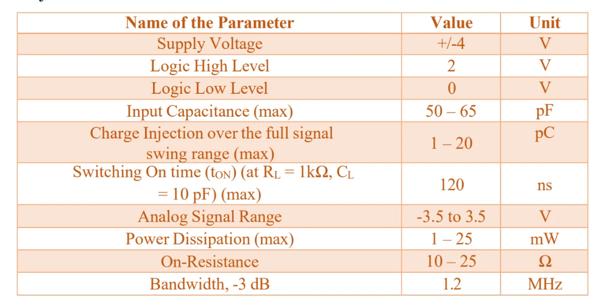

Analog IC Design
1:8 Analog Demultiplexer Using CMOS Transmission Gates
Cadence Virtuoso · GPDK 90 nm (2 V devices) · Spectre/ADE · ViVA
A course-specification design: route one analog input (−3.5 V to +3.5 V, ±4 V rails) to one of eight outputs using 28 MOSFETs in seven reusable 1:2 DEMUX cells. Each cell holds two CMOS transmission gates; one full path crosses three of them. Every electrical spec was measured in its own dedicated testbench.

Architecture
The design is built from three hierarchical cells — tg_cell (NMOS ∥ PMOS), demux_1to2 (two TGs) and demux_1to8 (seven 1:2 cells in a 1-2-4 tree). The 0 / 2 V select inputs are converted internally to complementary ±4 V control levels.


Functional verification
A 100 kHz, 3.5 V-amplitude sine was applied while the three select bits cycled through all eight codes; each output was loaded with 10 kΩ for visibility. A fixed-code run confirms the selected output carries the signal and the other seven stay off.

Electrical specification tests
Each parameter used its own testbench and the load the specification calls for (see the test matrix in the repository README).





Specification

Scope and limitations
- Select-level conversion uses ideal VCVS blocks, so the 1.80 µW is core rail power, not the power of a physical level shifter (estimated 0.1–1 mW for a CMOS shifter).
- gpdk090
nmos2v/pmos2vmodels are low-voltage devices; running them at ±4 V is an academic schematic-level assumption, not a reliability-qualified design. - Input capacitance was deliberately padded into the 50–65 pF band with an added ≈53 pF capacitor.
- Bandwidth meets the instructor-approved fallback (> 1.2 MHz); no 1.2 MHz cutoff was implemented.
- Schematic-level only: no layout, DRC, LVS or post-layout extraction.